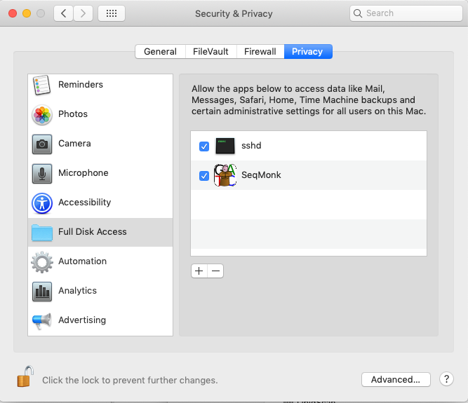

Since the release of OSX 10.15 (Catalina) Apple has placed restrictions on disk access for apps installed from outside the app store. This means that default installations of SeqMonk will only be able to read data which is in your home directory. Data elsewhere such as:
...are inaccessible to SeqMonk, and browsing to those locations will either fail, or will show apparently empty folders. If you're happy to just keep your data in your home directory then that's fine, but if you want to load or save data in other locations then you'll need to follow the steps below to give SeqMonk access to your whole drive.
Adding read permission to your whole computer will require that you have administrator privileges on your Mac. You'll only need these to set up the permissions - after that you can continue to run SeqMonk as a normal user.
Additional permissions will only work if SeqMonk is installed in your main Applications folder, so just the Finder to drag SeqMonk to /Applications if it isn't there already.
From the main apple menu select System Preferences > Security & Privacy and then from the list on the left select 'Full Disk Access'.
If the little padlock icon on the bottom left of the dialog is locked then click on it and enter the username / password for an admin account to allow yourself to make changes.
Use the Finder to look at your Applications folder. Select the SeqMonk application and drag it into the list on the right of the Full Disk Access preferences window (just above the plus and minus buttons). When you let go you should see the SeqMonk icon appear in the list.

The next time you launch SeqMonk you should be able to access all areas of your disk.
You will find that after upgrading SeqMonk you may lose disk access permissions, even though the SeqMonk icon still appears in the list of permitted applications. If this happens then select the SeqMonk entry in the list of Full Disk Access programs and then press the 'minus' icon just below the list to remove it. Then re-add SeqMonk by dragging it from the Applications folder, and disk access should be restored.